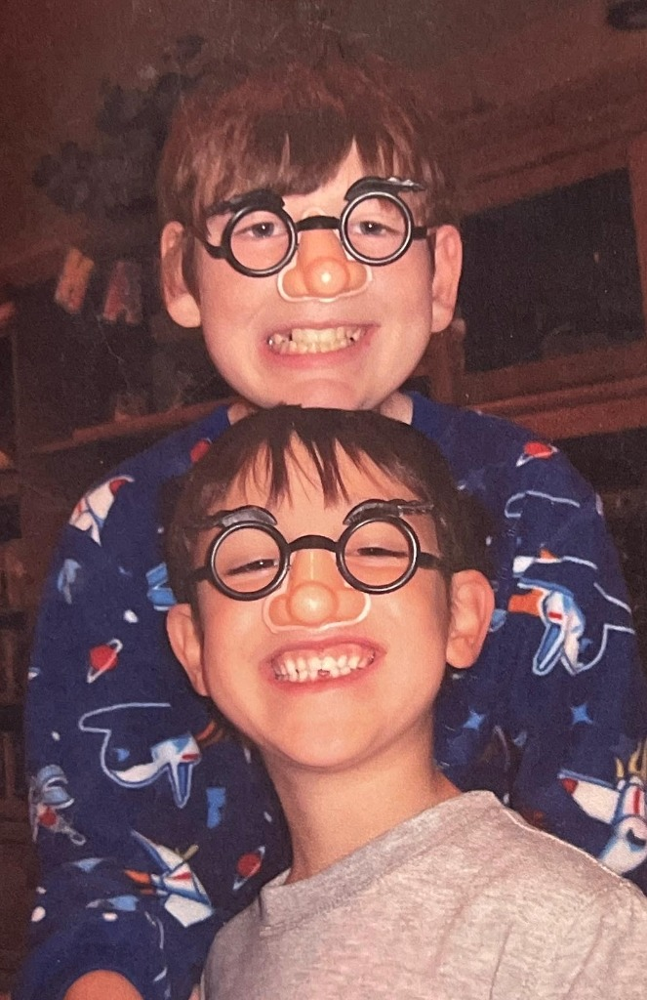

The Curator
Welcome to my collection of hidden auditory gems. I've always believed that finding a good song is like solving a riddle—it requires patience, a keen ear, and a bit of luck.
Here, I share the tracks that I've "spied" in the noise of the everyday. From synthwave to lo-fi, jazz to indie, every song has a story waiting to be uncovered.
